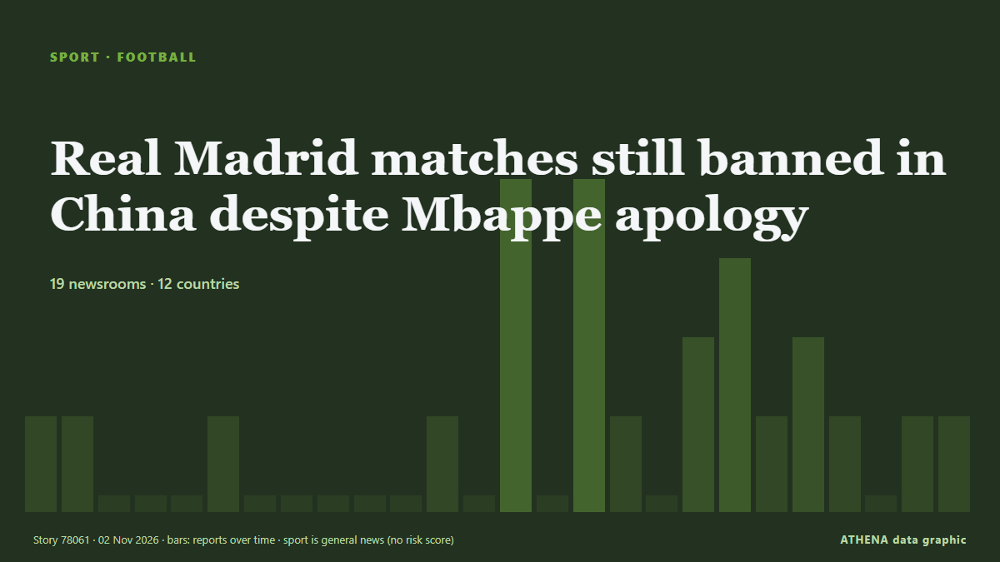

Ποδόσφαιρο
ΧορηγούμενοΠαρουσιάζεται από  Cybernetics and Artificial Intelligence Lab Welcome to the Cybernetics and Artificial Intelligence Laboratory, established at the Department of Business Administration of the National
Cybernetics and Artificial Intelligence Lab Welcome to the Cybernetics and Artificial Intelligence Laboratory, established at the Department of Business Administration of the National
| 20 Οκτ | 0 |
|---|---|
| 21 Οκτ | 1 |
| 22 Οκτ | 0 |
| 23 Οκτ | 1 |
| 24 Οκτ | 0 |
| 25 Οκτ | 0 |
| 26 Οκτ | 0 |
| 27 Οκτ | 3 |
| 28 Οκτ | 3 |
| 29 Οκτ | 3 |
| 30 Οκτ | 5 |
| 31 Οκτ | 4 |
| 1 Νοε | 4 |
| 2 Νοε | 0 |
Οι τίτλοι των ειδήσεων παρουσιάζονται στα αγγλικά, όπως δημοσιεύτηκαν.

Real Madrid matches still banned in China despite Mbappe apology
"I've seen a lot of responsibility from a club which, at this level, is a club of great class, and as far as we're concerned, that's it, we've done our part, there's nothing more for us to do,"… από Vanguard
Chinese state TV fails to air Real Madrid match after Mbappe row
Mbappe, Real and La Liga later all said sorry for his remarks, and China's foreign ministry said it took the player's apology "seriously". από CNA (Channel NewsAsia)
Ten Hag says relegation a real possibility for Man Utd
United sit 17th with seven points from nine games, above relegation-placed Crystal Palace on goal difference, and are winless in nine matches, their longest run without victory since 1984. από Free Malaysia Today
1 killed, 8 injured in shooting outside 'Magic City Classic' in Alabama
One person was killed and eight others were wounded in a mass shooting just outside Legion Field after the annual "Magic City Classic" football game, police in Birmingham, Alabama, said. από ESPN
Andoni Iraola: We have to tell players to dive for penalties
Alexander Isak was denied a spot-kick in Liverpool’s loss to Arsenal despite a clear pull by Jurrien Timber. από The Irish News (Belfast)
CAF names Samson Adamu as new general secretary
CAF President Motsepe said Adamu’s appointment followed a comprehensive recruitment process. από SABC News
14 players could miss Liverpool vs Arsenal after Andoni Iraola injury update
Liverpool have the chance to close the gap on Arsenal in the Premier League table when they meet at Anfield this afternoon. από Liverpool Echo
Barca hammer Alaves 6-1 to retain Liga top spot
Raphinha and Lamine Yamal struck twice each as Barcelona thrashed Alaves 6-1 on Saturday to reclaim their La Liga lead and get back on track after two damaging defeats. από Vanguard
Brighton stun Man City, 10-man Man Utd beaten by Chelsea
Brighton inflicted a second straight Premier League defeat on Manchester City with a 1-0 win to close within two points of the leaders on Saturday, while Manchester United slumped to another damaging… από The Namibian
Pressure piles on Man United’s Carrick after 2-0 defeat at Chelsea
The travelling fans applauded Michael Carrick when he strode to the corner of the Shed End at Stamford Bridge to acknowledge them but Manchester United’s former stalwart midfielder and current… από Cyprus Mail
Kenya: Ruto - Why Bayern V Ajax in Nairobi Is Perfect Tribute to Former PM Raila Odinga
[Capital FM] NAIROBI -- President William Ruto believes there could be no better way to honour former Prime Minister Raila Odinga than a blockbuster tie between Bayern Munich and Ajax at a stadium… από AllAfrica
Kane misses penalty as Bayern draw 2-2 with Dortmund
Harry Kane missed a penalty for Bayern Munich and was punished by Fabio Silva’s late equaliser as Borussia Dortmund earned a 2-2 draw in Der Klassiker. από Sky Sports
Hakimi bags hat-trick as PSG thrash Le Havre 5-1
Achraf Hakimi rose to the occasion scoring a glorious hat-trick on Friday as a heavily rotated Paris Saint-Germain thumped rock-bottom Le Havre 5-1 in Ligue 1. από Vanguard
Man City beaten by Brighton as Yasin Ayari makes amends for midweek penalty miss
Ayari missed a spot-kick in Wednesday’s shoot-out defeat in the Carabao Cup against City but scored the only goal of the game on Saturday. από The Irish News (Belfast)
Arteta tells Dowman Premier League is 'not Disneyland' after ban upheld
LONDON: Arsenal manager Mikel Arteta said teenager Max Dowman must learn to cope with the demands of elite football after the winger’s red card in the League Cup defeat at fourth-tier Fleetwood Town… από New Straits Times
Michael Carrick confirms Bruno Fernandes will remain Manchester United captain
Manchester United captain Bruno Fernandes turned on head coach Michael Carrick after one of the club's most humiliating nights in European history. από MyJoyOnline
England heading out of the World Cup despite beating Papua New Guinea
The story of England’s World Cup exit - despite their win over Papua New Guinea. από Yorkshire Post
Azerbaijan to face Afghanistan in final match at FIFA U-15 World Cup in Baku
Azerbaijan will play its final match at the FIFA U-15 World Cup and Festival, being held in Baku, today. από AzerNews
Everton beat Newcastle to set up League Cup quarter-final with Fleetwood
Everton advanced to the League Cup quarter-finals with a 3-1 victory over Newcastle United on Thursday, setting up a clash against fourth-tier side Fleetwood Town. από Cyprus Mail